Zhibo Pang 庞智博
Tenured Professor & Ph.D. Advisor @ Peking University
School of Advanced Manufacturing and Robotics
Director, Physical Intelligence Lab (物理智能实验室)
Former Senior Principal Scientist, ABB Corporate Research, Sweden (2013–2025)
Adjunct / Dual-appointed Professor, KTH Royal Institute of Technology (2018–2025)
About the Lab
The Physical Intelligence Lab (物理智能实验室) at Peking University, led by Prof. Zhibo Pang, focuses on robots and autonomous control systems for both traditional and emerging industrial scenarios. We develop the full stack of urgently needed intelligent software and hardware technologies — from multimodal embodied AI models to high-dynamic dexterous robotic systems — with the goal of redefining flexible precision manufacturing through embodied intelligence.
Our research is organized around the PAM (Physical-Attribute Model) paradigm: a unified embodied-intelligence framework that represents the physical semantics affecting robot action generation, efficiently produces massive simulation scenarios and training data, and delivers generalization, precision, and industrial-grade reliability for high-value contact-rich manipulation tasks. We pursue a deep integration of mechanics, classical control, and artificial intelligence.
Prof. Pang proposed the Cloud-Fog Automation (CFA) and Cloud-Fog Robotics technology frameworks in 2017, which were later highlighted by ABB's global CTO and adopted in ABB's product strategy, including the OmniCore robot controller generation. Before joining Peking University, he spent twelve years at ABB Corporate Research Sweden, where he led the software and communication technologies of several world-first industrial products, including ABB Mobile YuMi — the industry's first mobile dual-arm humanoid collaborative robot.
📰 News
- Jul 2026 Our paper TCSC: Time-Consistent Synchronization and Completion for Bridging the Temporal Sim-to-Real Gap in Embodied Intelligence is published in IEEE Transactions on Consumer Electronics.
- Jul 2026 Our paper Spectral-Temporal Conditioning: A Frequency-Domain Framework for Robust Robotic Imitation Learning (Temp-ACT) is published in IEEE Transactions on Consumer Electronics.
- 2026 Our paper on the Embodied AI-Driven Integrated Development Environment for Industrial Automation Systems is published in IEEE Industrial Electronics Magazine.
- 2026 TRACE is accepted by IEEE/RSJ IROS 2026; CAML is accepted by ICML 2026; three papers (RegGraft, VistaCo, PhyGen) are under review at AAAI 2027.
- 2026 Our paper APiLLM: Action Prompt Integration in Large Language Models for Time Series Forecasting in Process Industrial Systems is published in Advanced Engineering Informatics.
- Oct 2025 Prof. Zhibo Pang joins Peking University as a Tenured Professor and founds the Physical Intelligence Lab.
🔬 Research
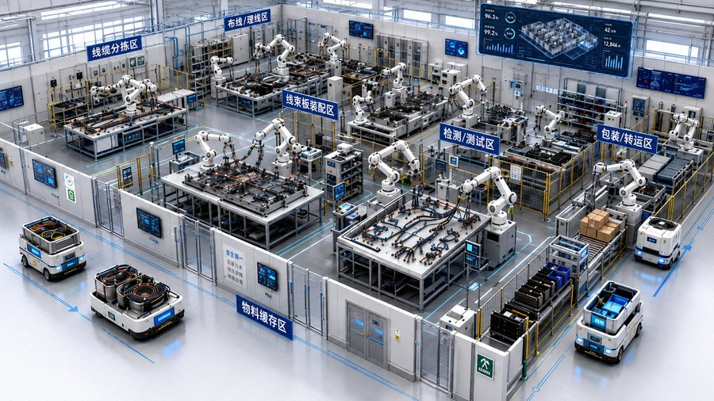
Embodied AI Models & Robot Learning
Multimodal embodied foundation models (VLA / world models / PAM), imitation and reinforcement learning for contact-rich manipulation, sim-to-real transfer, and reliable long-horizon task planning through physics-semantics-driven agent clusters (PySAC).
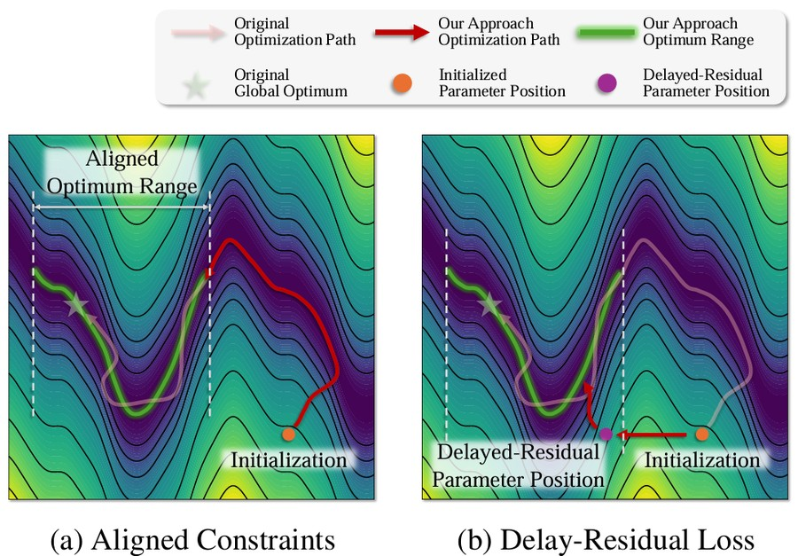
Physics-Informed Machine Learning
Physics-informed neural networks (PINNs), neural operators for large-scale multi-scale PDE solving, and mechanism–data fusion models that bring physical semantics into learning-based control.
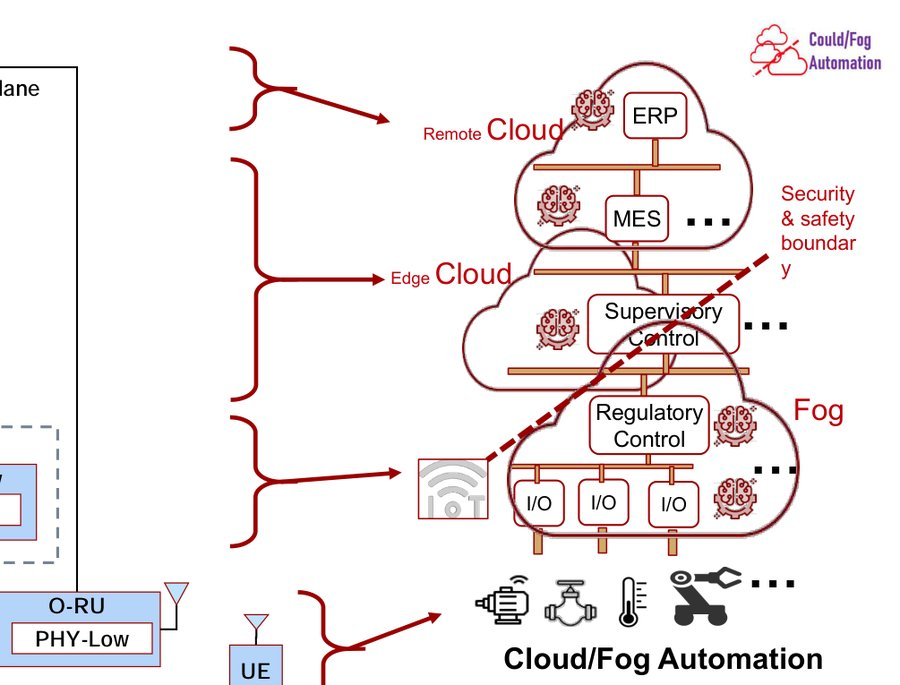
Cloud-Fog Automation & Industrial eCPS
Cloud-Fog Automation (CFA): software-defined, intelligence-native industrial control infrastructure with communication–computing–control co-design, virtualized controllers, converged 5G/6G networks, and functional safety.
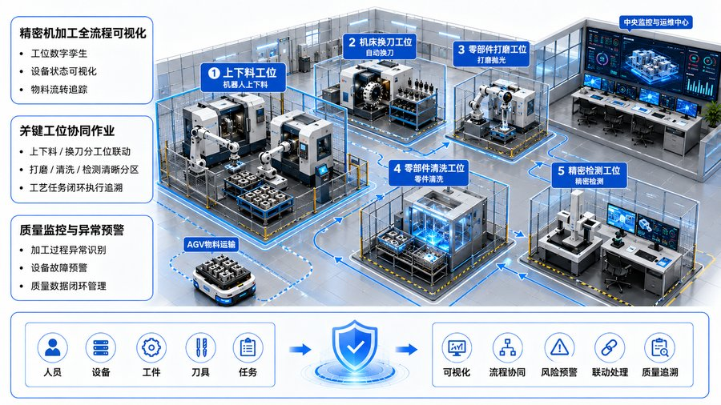
Robot Systems & Industrial Deployment
High-dynamic dexterous robotic systems, dexterous hands, embodied toolchains (ETC), embodied model libraries (EML), and edge controllers (ECC) — deployed as reusable process packages for flexible precision manufacturing in semiconductor, aerospace, rail-transit, and new-energy equipment.
📚 Selected Publications
* Corresponding author. Full and up-to-date list available upon request.
Embodied AI & Robot Learning
D. Hu et al., "TRACE: Trajectory Action Chunking Enhancement for Robust Imitation Learning in Robotic Manipulation," in IEEE/RSJ International Conference on Intelligent Robots and Systems (IROS), 2026.
Improves precision from ±1.2 to ±0.15 via encoder debiasing and visual–trajectory cross-attention.
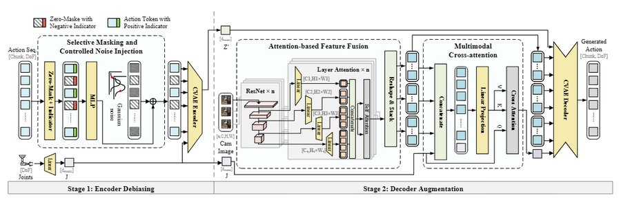
D. Hu et al., "Spectral-Temporal Conditioning: A Frequency-Domain Framework for Robust Robotic Imitation Learning" (Temp-ACT), in IEEE Transactions on Consumer Electronics, 2026.
Frequency-domain policy learning lifts long-horizon success rate from 3% to 36%.
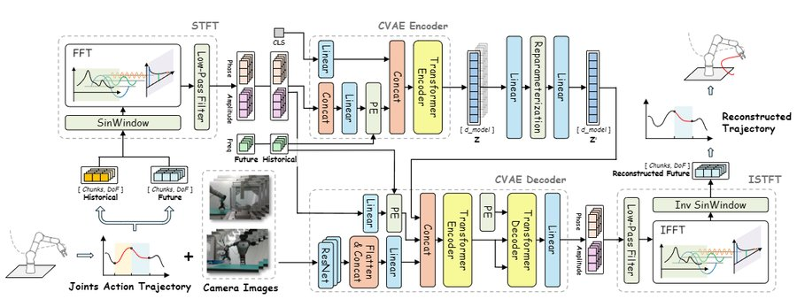
Y. Chen et al., "TCSC: Time-Consistent Synchronization and Completion for Bridging the Temporal Sim-to-Real Gap in Embodied Intelligence," in IEEE Transactions on Consumer Electronics, 2026.
Wasserstein-aware causal synchronization raises task success from ~68% to 75%.
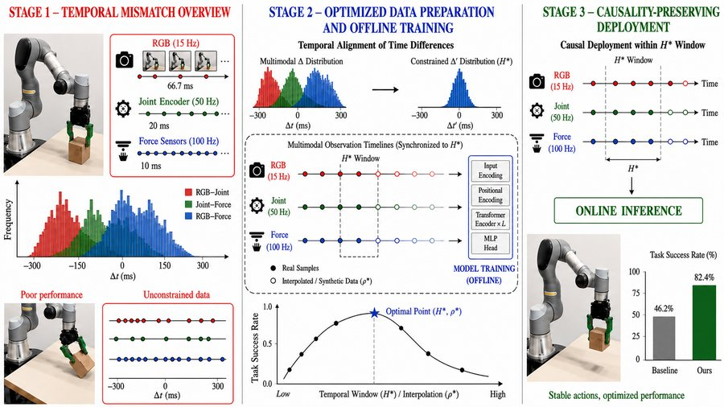
F. Ma et al., "Embodied Artificial Intelligence-Driven Integrated Development Environment for Industrial Automation Systems: Requirements and Framework," in IEEE Industrial Electronics Magazine, 2026.
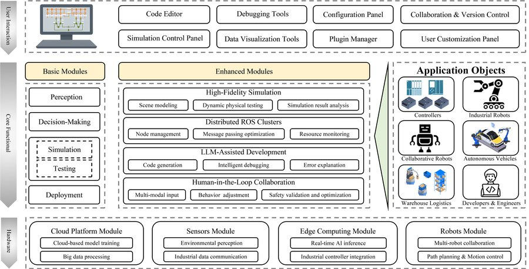
Y. Liu et al., "VistaCo: Synergizing Visual Attention and Task Cognition in Robot Visuomotor Policy Learning," Forty-First AAAI Conference on Artificial Intelligence (AAAI), 2027, under review.
Real-world success rate improved from 44.5% to 67.5%.
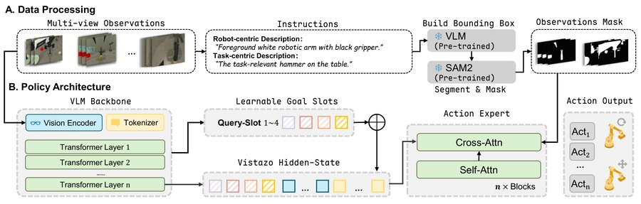
Y. Lou et al., "DynamicWAM: Dual-Path Motion Conditioning for World–Action Models in Dynamic Manipulation," Forty-First AAAI Conference on Artificial Intelligence (AAAI), 2027, under review.
Dual-path motion conditioning lifts the DOMINO benchmark success rate from 29.3% (previous SOTA) to 38.2%.
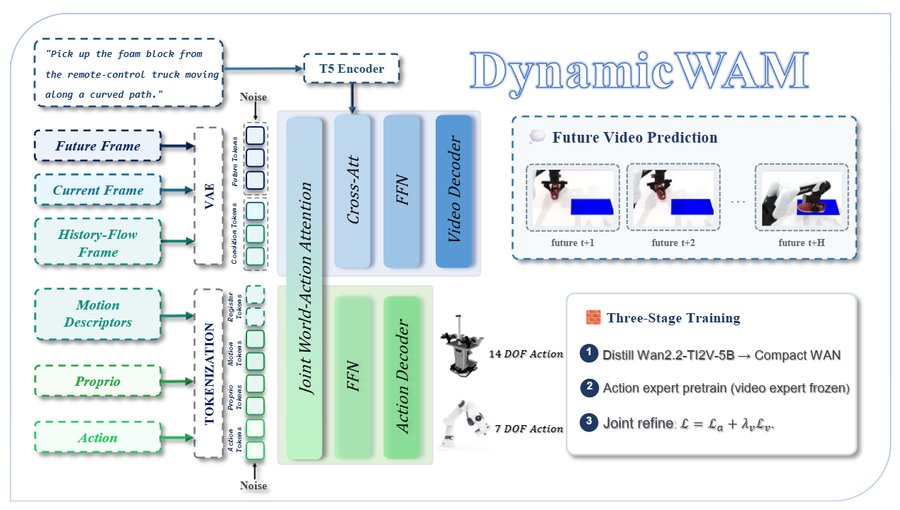
D. Song et al., "RegGraft: Region-Aware Block Reuse in Diffusion Transformers," Forty-First AAAI Conference on Artificial Intelligence (AAAI), 2027, under review.
25% improvement in diffusion training efficiency via cross-domain block grafting.
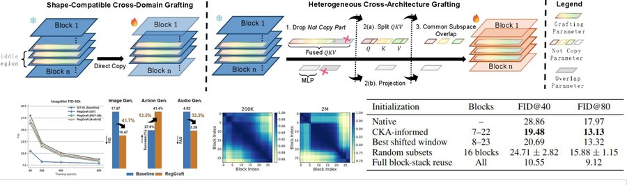
F. Ma et al., "PhyGen: Physics-Informed Repair Fields for Generated Robot Demonstrations," Forty-First AAAI Conference on Artificial Intelligence (AAAI), 2027, under review.
Rigid-body demonstration generation yield raised from 55.6% to 93.5%.
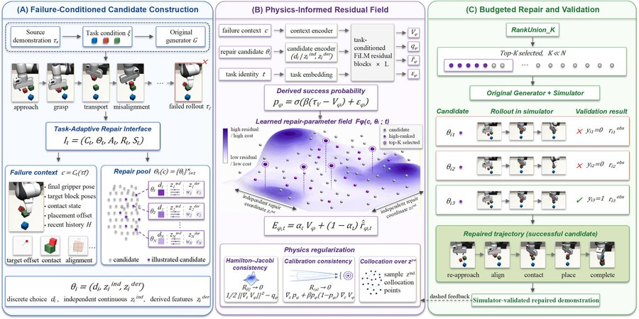
Y. Fu et al., "CableSort: Force-Guided Dual-Arm Sorting of Stacked Cables," RSS 2026 DAROMA Workshop, 2026.
Instance-mask IoU improved from 0.36 to 0.93 over the strongest segmentation baseline, with 48% end-to-end sorting success.
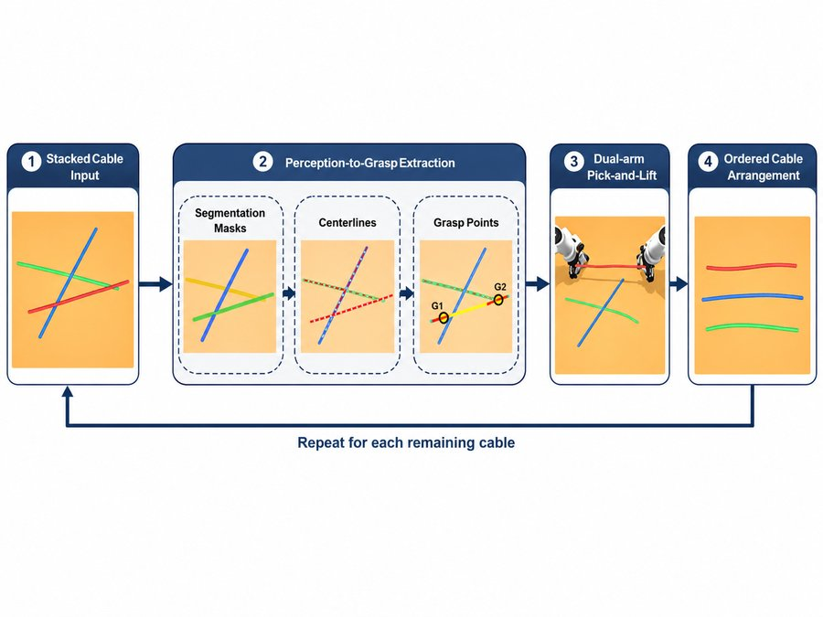
"ViPS: Visuomotor Policy-to-Servo Coordination for Precision Industrial Manipulation," IEEE Transactions on Industrial Cyber-Physical Systems (TICPS), under review.
Installation success rate improved from 35% to 78%.
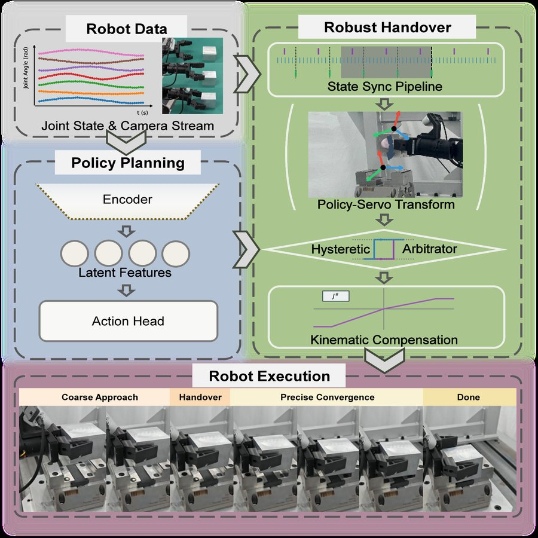
"UPST: Unified Pose-Stream Teleoperation for Heterogeneous Robot Control and Demonstration Generation," submitted to IEEE Industrial Electronics Magazine, 2026.
Unified pose-stream teleoperation cuts task time by 24.5% over the VR baseline and raises ACT success from 69.5% to 76.8%.
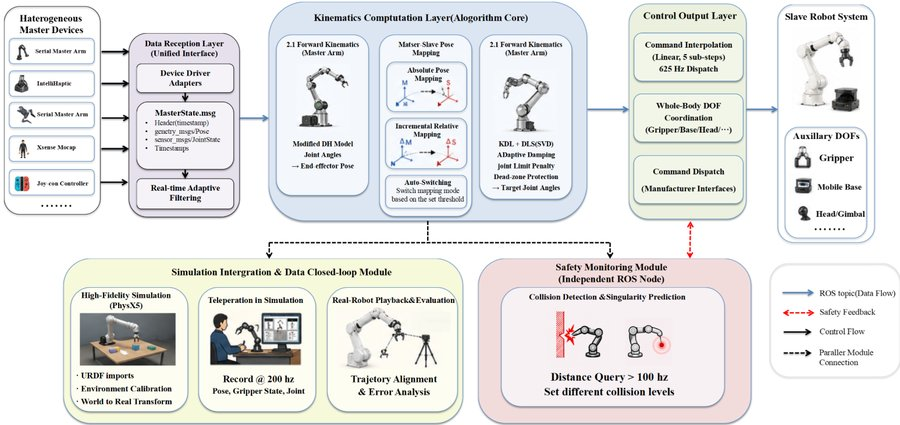
"CRAFT: A Cloud-Fog Automation Synergistic Framework Empowered by Embodied AI in Precision Manufacturing," Robotics and Computer-Integrated Manufacturing (RCIM), under review.
Cloud–fog–edge task execution lifts real-factory success from 39.5% to 76.5% with ~7× longer continuous autonomous operation.
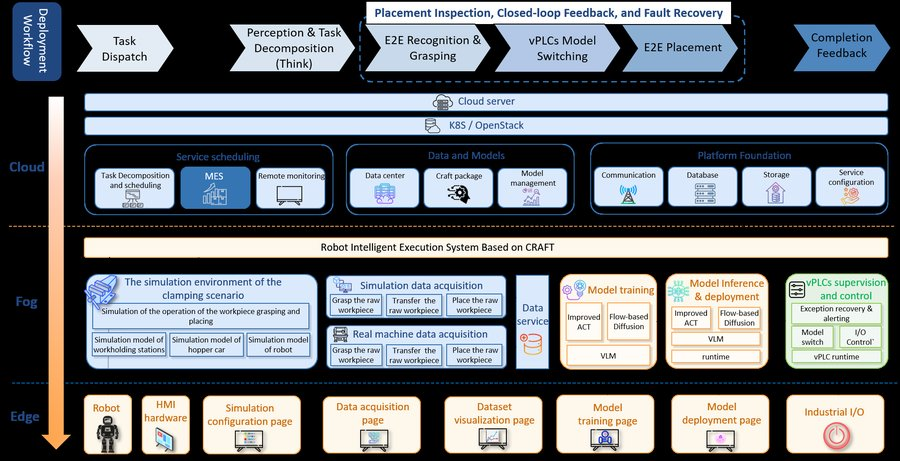
J. Deng et al., "STEAM: Structured Temporal Episode Annotation for Manipulation in Embodied Robots," IAI, 2026.
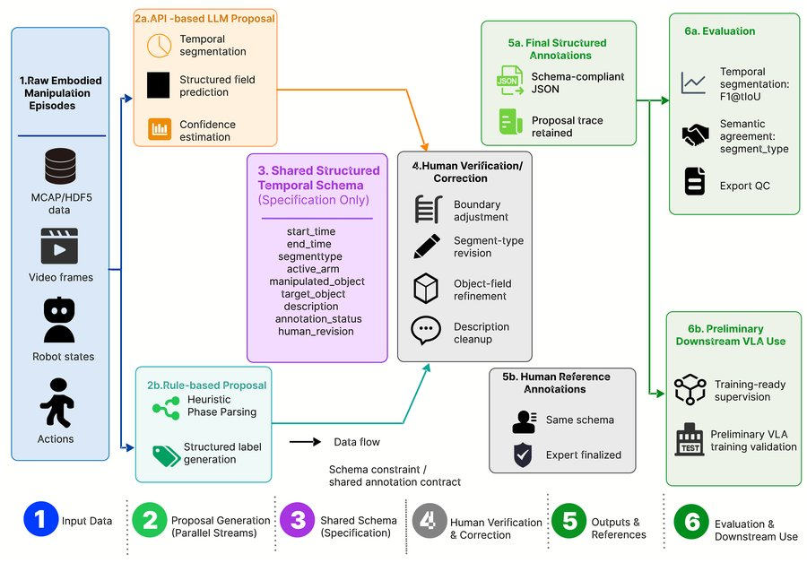
Y. Li et al., "DCP-ACQ: Reliable Control and Data Acquisition for Embodied Intelligence," IAI, 2026.
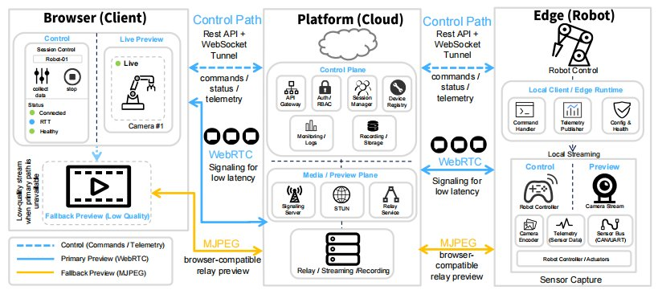
W. Wang et al., "MP-GOP: Mobile Photogrammetric Reconstruction and Geometric Optimization," submitted to IAI, 2026.
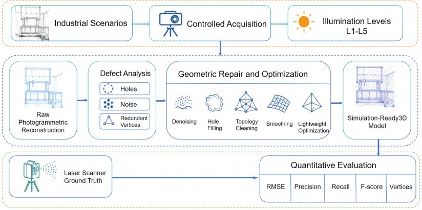
J. Liao et al., "GES-Bench: Simulation-Readiness Evaluation for Single-View 3D Generation," submitted to IAI, 2026.
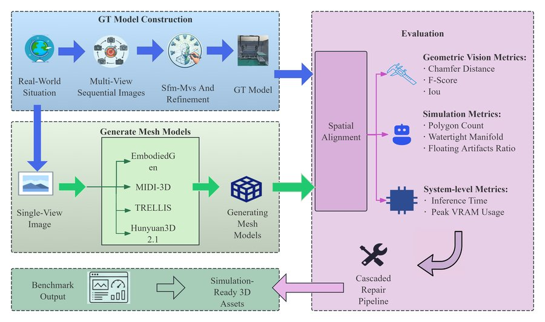
Physics-Informed Machine Learning
L. Zhang et al., "Action Prompt Integration in Large Language Models for Time Series Forecasting in Process Industrial Systems" (APiLLM), in Advanced Engineering Informatics, 2026.
Action-aware attention reduces average MSE and MAE by 18.6% and 10.7% over the SOTA method.
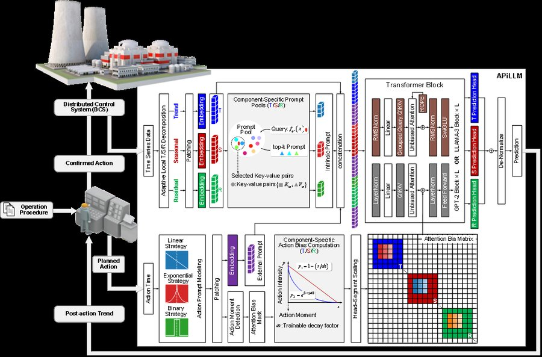
Y. Luo, J. Wang, et al., "MMET: A Multi-Input and Multi-Scale Transformer for Efficient PDEs Solving," in International Joint Conference on Artificial Intelligence (IJCAI), 2025.
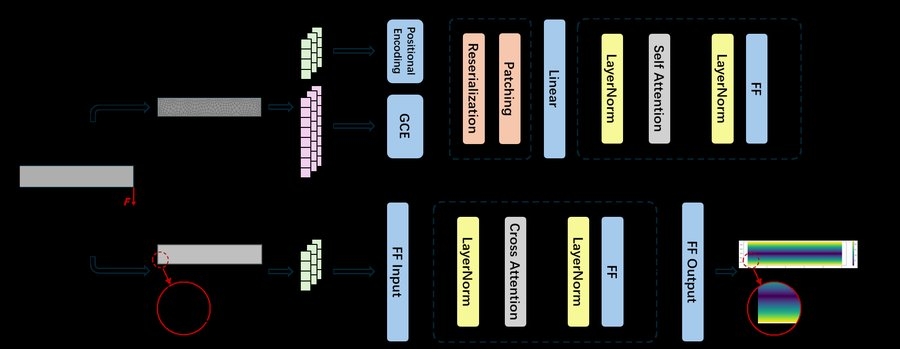
Y. Luo, P. Zhu, et al., "Mitigating Gradient Pathology in PINNs through Aligned Constraint" (CAML), in International Conference on Machine Learning (ICML), 2026.
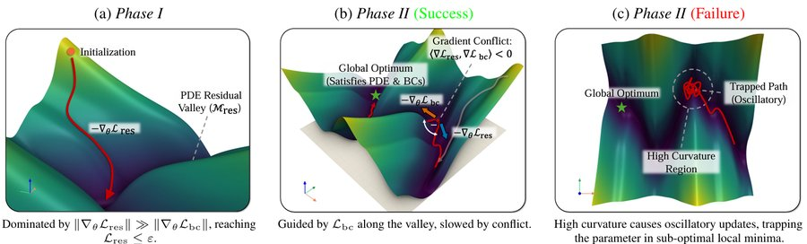
Y. Luo, D. Hu, et al., "Derivative Cheating in Fusion-Based PINNs: Understanding and Preventing," Conference on Neural Information Processing Systems (NeurIPS), 2026, under review.
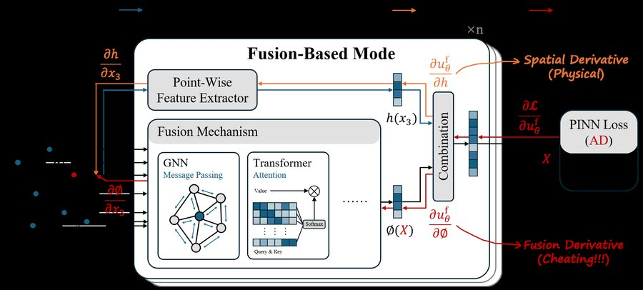
Cloud-Fog Automation & Industrial Communications
J. Jin, K. Yu, J. Kua, N. Zhang, Z. Pang*, and Q.-L. Han*, "Cloud-Fog Automation: Vision, Enabling Technologies, and Future Research Directions," in IEEE Transactions on Industrial Informatics, vol. 20, no. 2, pp. 1039–1054, 2024.
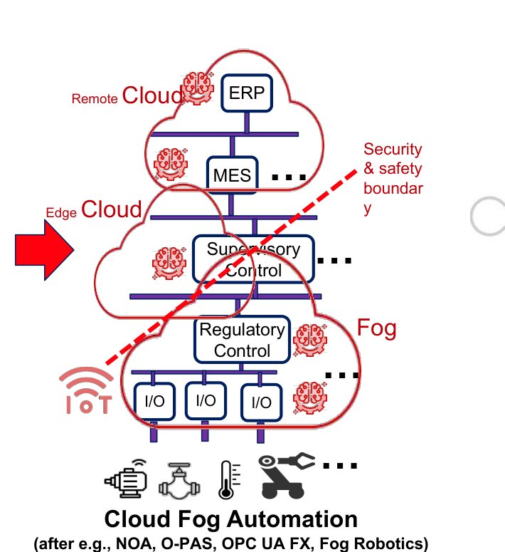
H. Lv, Z. Pang*, et al., "Cloud–Fog Automation: Heterogeneous Applications Over New-Generation Infrastructure of Virtualized Computing and Converged Networks," in IEEE Industrial Electronics Magazine, 2024.
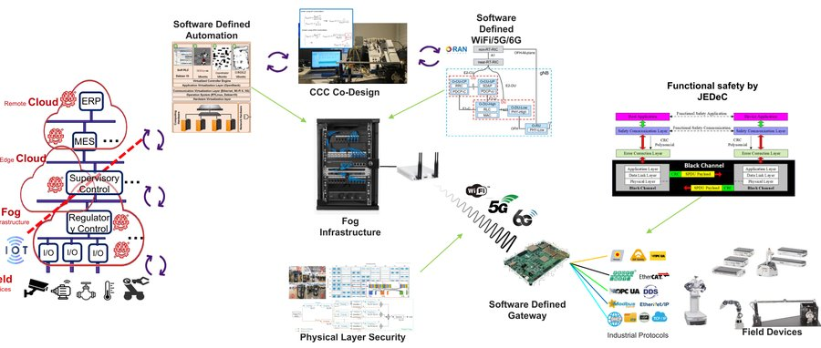
M. Zhan, Z. Pang*, et al., "Joint Error Detection and Correction for Safety Communication: Reducing the Alarm Rate of Transmitted Safety Messages," in IEEE Industrial Electronics Magazine, 2024.
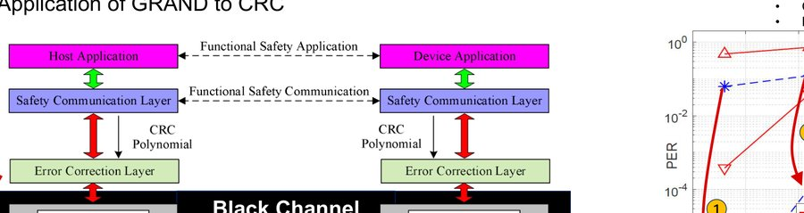
M. Zhan et al., "High Throughput Joint Error Detection and Correction Based on GRAND-MO and CRC," in IEEE Transactions on Consumer Electronics, 2024.
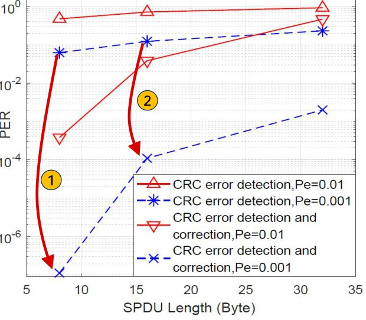
M. Zhan et al., "Noise Error Pattern Generation Based on Successive Addition-Subtraction for GRAND-MO," in IEEE Communications Letters, vol. 26, no. 4, pp. 743–747, Apr. 2022.
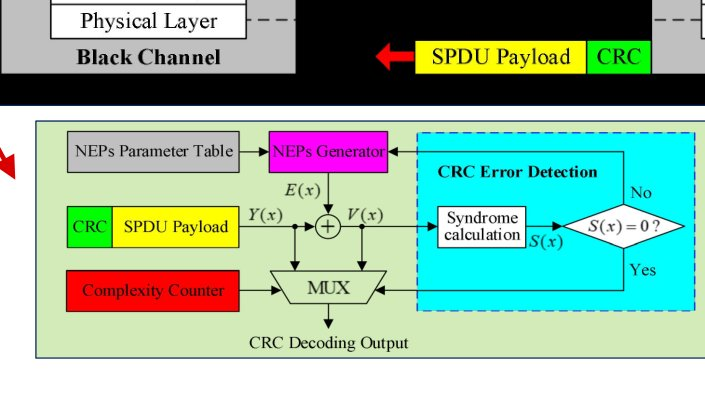
Y. Liu, Z. Pang, et al., "RL-Based Joint Latency Optimization for Software-Defined Wireless Cloud Fog Automation," in IEEE International Conference on Industrial Informatics (INDIN), 2025.
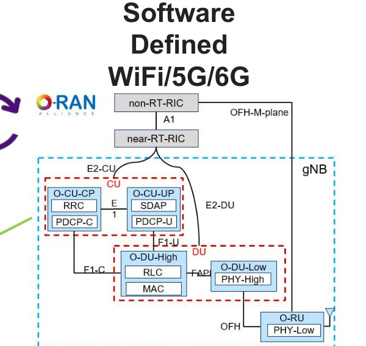
Y. Liu, Z. Pang, and Y. Ding, "CFA-OpenRAN: An Integrated Communication, Computing, and Control Architecture for Wireless Cloud Fog Automation Based on O-RAN," in the 22nd IEEE International Conference on Industrial Informatics (INDIN), Beijing, China, Aug. 2024.
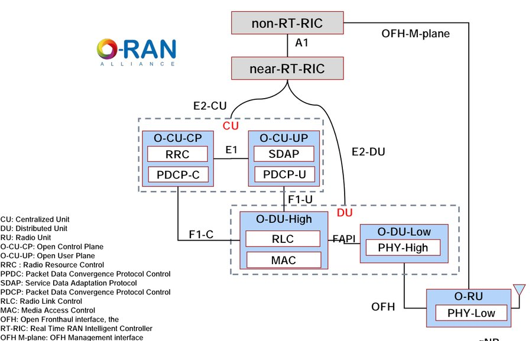
👥 People
Principal Investigator
Zhibo Pang (庞智博) — Tenured Professor, Ph.D. Advisor
Postdoctoral Researchers
Ming Kang (亢明) — Physical Embodiment
Visiting Scholars
Le Zhang (张乐) — Associate Professor, Fusion Intelligence Algorithms
Ph.D. Students
- Boxian Yao (姚泊先) — Cable Manipulation
- Dongxiao Hu (胡东晓) — Policy Learning (joint)
- Su Zhang (张粟) — Embodied Simulation (joint)
- Yuanhao Liu (刘元浩) — Multimodal Control (joint)
- Fuyu Ma (马富裕) — Embodied Simulation (joint)
- Guixu Wang (汪圭旭) — Efficient Embodiment (joint)
- Zhaolong Zhou (周兆龙) — Collision Avoidance (joint)
- Yanghang Zeng (曾杨航) — Industrial Safety (joint)
- Yijia Liu (刘一甲) — 5G/6G Wireless Communications (joint)
- Yichen Luo (罗翼晨) — Physics-Informed Neural Networks (joint)
- Yiwen Wang (王一雯) — Spatial Reasoning (joint)
- Donghao Song (宋东昊) — Multimodal Learning (joint)
- Ziqi Wang (王子琪) — Engineering Ph.D., ENN Science & Technology
- Minghan Wang (王鸣晗) — Engineering Ph.D., China Development Bank
Master Students
- Peiyu Zhu (朱佩禹) — Cable Manipulation
- Yifan Yang (杨怡帆) — Cable Manipulation
- Xiang Zhang (张翔) — Cable Manipulation
- Luliang Ye (叶鲁亮) — Cable Manipulation
- Xuan Han (韩萱) — Pharmaceutical Unpackaging
- Jiajun Li (李佳俊) — Data Generation (joint)
- Junhao Deng (邓俊豪) — Semantic Extraction (joint)
- Tao Wang (王涛) — Embodied Simulation (joint)
- Jundong Xu (徐俊东) — Embodied Simulation (joint)
- Guangyu Yang (杨光宇) — Live-Object Grasping (joint)
- Kerun Chen (陈柯润) — Embodied Simulation (joint)
- Yuxing Yang (杨宇星) — Embodied Simulation (joint)
- Jinfeng Liao (廖锦锋) — Data Synthesis (joint)
- Weibing Wang (王维兵) — Data Synthesis (joint)
Research Interns
Huaye Tan (谭华烨), Mengdi Li (李梦迪), Tianlin Li (李天琳), Xin Liu (刘鑫), Shuhan Zhan (詹淑涵), Yuchen Xue (薛雨宸), Zinuo Jin (金子诺), Zhuoran Qiao (乔卓然), Tianyou Zuo (左天佑), Xiyu Zhu (朱玺谕), Wenjie Ding (丁文杰), Yunfan Lou (娄云帆)
Project Management
Heqin Wang (王鹤钦)
Alumni
- Siwen Zhou (周思文), M.S. → Tashi Zhihang (它石智航)
- Yizhe Chen (陈亦哲), M.S.
🎓 Teaching
-
Development Practice of Robotic Embodied Intelligence Systems (new course, under construction)
A practice-oriented course covering the full pipeline of embodied AI development in four units: task simulation, data collection, model training, and inference deployment. -
Embodied AI Development Bootcamp (Student Engineering & Science Innovation Association)
A hands-on training camp that bridges classroom learning and industrial deployment, strengthening students' practical engineering skills in embodied intelligence.
🏭 Industrial Impact
Prof. Pang's innovations have been adopted by world-leading industrial automation products, generating output value of hundreds of millions of euros across the power, process, discrete, and building automation industries.
- 2025 Led software & communication technologies of the ABB Ability 800xA HI safety controller — the world's first DCS product supporting the OPC UA Safety protocol (DCS world No.1 market share).
- 2023 Cloud-Fog Automation became a core selling point of ABB's new-generation robot controller OmniCore.
- 2022 Lead author of ABB's vision whitepaper for process-industry control systems.
- 2019 Led software & communication of ABB Mobile YuMi — the world's first mobile dual-arm collaborative robot, which brought ABB into the healthcare and e-commerce logistics robot markets (endorsed by Karolinska Hospital, JD, Amazon, Volkswagen, Walmart).
- 2018 Led Hitachi Energy Tropos wireless technology — one of the few wireless networks for power & energy infrastructure in the industry.
- 2017 Led Hitachi Energy WirelessHP — the world's first hybrid wireless-optical UHVDC control technology (HVDC world No.1 market share).
- 2016 Led communication & software of ABB free@home — a premium building automation & security brand with millions of installations; one of the world's largest Thread ecosystems.
- 2012 Led ABB WirelessHART process automation instrumentation — the world's first wireless standard for process automation.
Academic & Professional Appointments (selected)
- Guest Professor, Beijing University of Posts and Telecommunications (2013–2022) — Trusted IoT / Medical AI
- International Advisor, Dept. of Industrial Engineering, Tsinghua University (2013–2016) — Industrial IoT
- Adjunct Professor, University of Sydney (2019–2023) — Industrial IoT / Intelligent Robotics
- Adjunct Professor, Zhejiang University (2019–2022) — Medical Robotics / Robot Skin
- Overseas Scholar Short-term Program, Beihang University (2020–2022) — Quantum Sensing
- Adjunct Professor, UESTC (2019–2022) — Cyber-Physical Security
- Overseas Renowned Scholar, Shenyang Institute of Automation, CAS (2019–2022) — Cloud-Fog Automation
🚀 Opportunities
We are recruiting Ph.D. students, master students, postdoctoral researchers, visiting scholars, and research interns!
If you are passionate about embodied AI, robotics, physics-informed machine learning, or industrial cyber-physical systems, and want to work on problems that matter for real industry, you are very welcome to join us. Postdoctoral positions on foundation models are currently open (虚位以待).
Please send your CV, transcripts, and a short description of your research interests to zhibo.pang@pku.edu.cn.
📸 Lab Gallery
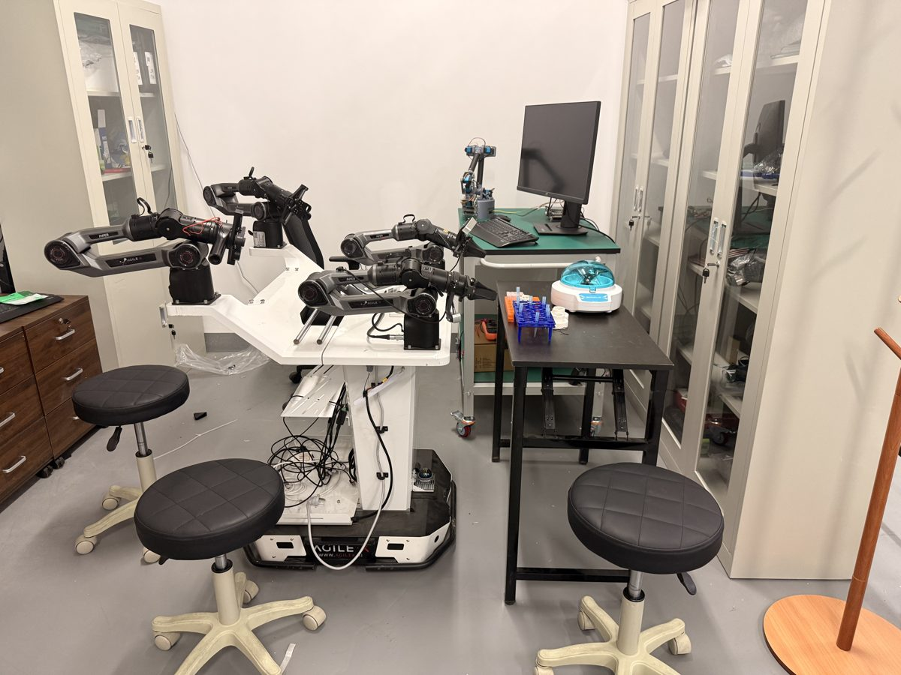
Dual-arm mobile manipulation platform
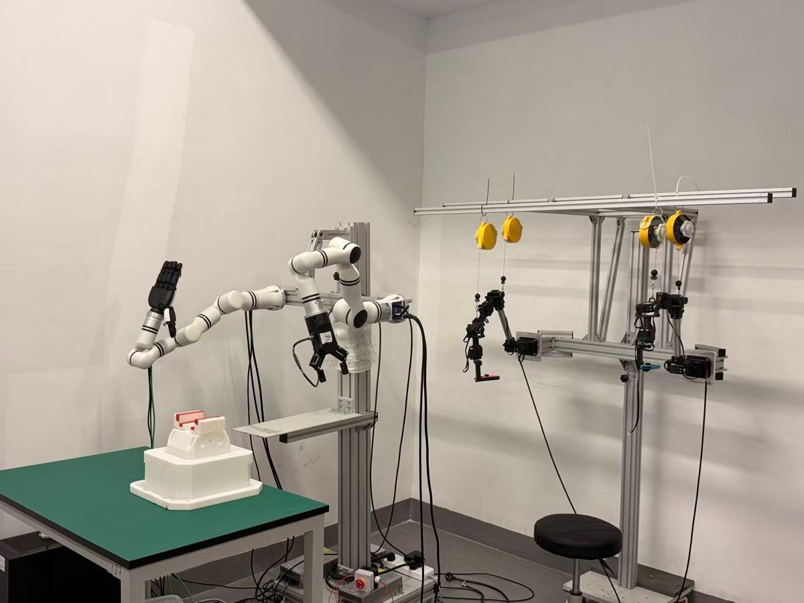
Cable manipulation & dexterous robot cell
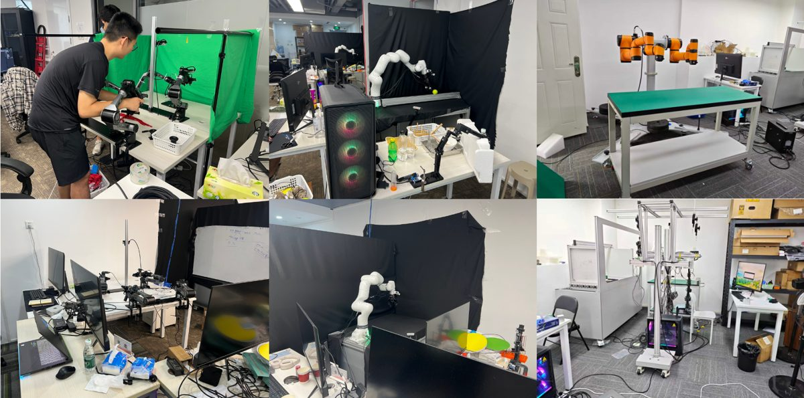
Robot workstations and data-collection setups
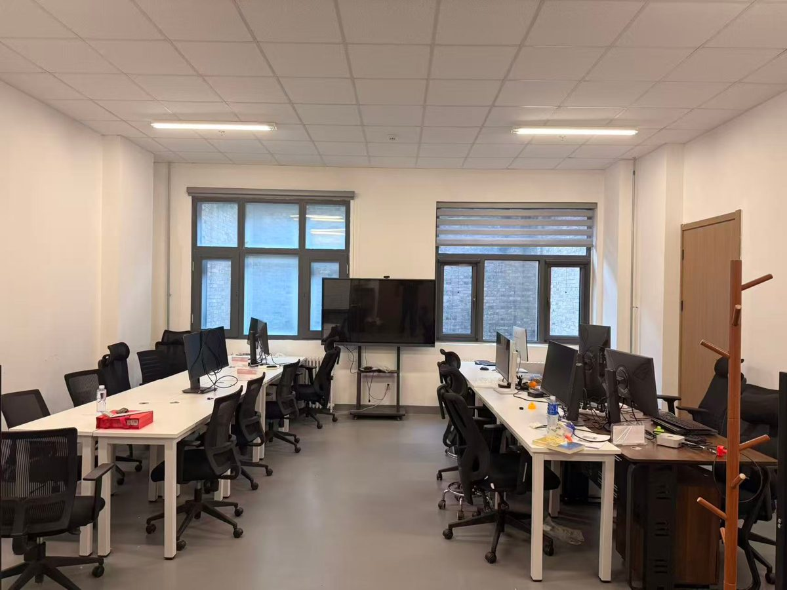
Lab B111, Xin'ao Engineering Building
Our lab operates at two sites: Room B111, Xin'ao Engineering Building (15 seats, 3 robot systems, ample computing power) and Yinke Building (76 seats, 8 robot systems, 4 meeting rooms).